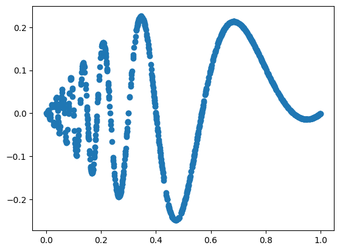
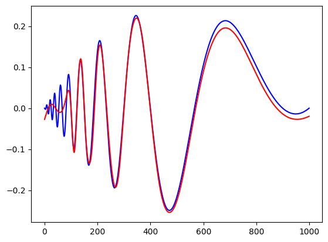

import torch
import torch.nn as nn
# This is inspired by Kolmogorov-Arnold Networks but using Chebyshev polynomials instead of splines coefficients
class ChebyKANLayer(nn.Module):
def __init__(self, input_dim, output_dim, degree):
super(ChebyKANLayer, self).__init__()
self.inputdim = input_dim
self.outdim = output_dim
self.degree = degree
self.cheby_coeffs = nn.Parameter(torch.empty(input_dim, output_dim, degree + 1))
nn.init.normal_(self.cheby_coeffs, mean=0.0, std=1 / (input_dim * (degree + 1)))
self.register_buffer("arange", torch.arange(0, degree + 1, 1))
def forward(self, x):
# Since Chebyshev polynomial is defined in [-1, 1]
# We need to normalize x to [-1, 1] using tanh
x = torch.tanh(x)
# View and repeat input degree + 1 times
x = x.view((-1, self.inputdim, 1)).expand(
-1, -1, self.degree + 1
) # shape = (batch_size, inputdim, self.degree + 1)
# Apply acos
x = x.acos()
# Multiply by arange [0 .. degree]
x *= self.arange
# Apply cos
x = x.cos()
# Compute the Chebyshev interpolation
y = torch.einsum(
"bid,iod->bo", x, self.cheby_coeffs
) # shape = (batch_size, outdim)
y = y.view(-1, self.outdim)
return yKANs with Chebyshev
Replace B-Splines with Radial Basis Functions. They should be faster to compute. Following base code is taken from fast-KAN
Function Fitting
We will take some interesting test functions from Wavelet Regression notebook.
The Doppler function is \[ f(x) = x(1-x) \sin(\frac{2.1\pi}{x+0.05}) \\ x \sim U[0,1] \]
import torch
import matplotlib.pyplot as plt
import numpy as np
from kan.utils import create_dataset
torch.set_default_dtype(torch.float64)
device = torch.device('cuda' if torch.cuda.is_available() else 'cpu')
print('device is: ',device)
f = lambda x: x[:,[0]]*(1-x[:,[0]])*torch.sin((2*np.pi)/(x[:,[0]]+.1))
dataset = create_dataset(f, n_var=1, device=device, ranges=[0,1])
print('train input data shape', dataset['train_input'].shape)
print('train label data shape', dataset['train_label'].shape)
plt.scatter(dataset['train_input'],dataset['train_label'])device is: cpu
train input data shape torch.Size([1000, 1])
train label data shape torch.Size([1000, 1])
# Define model
import torch
import torch.nn as nn
import torch.optim as optim
from tqdm import tqdm
class ChebyKAN(nn.Module):
def __init__(self):
super(ChebyKAN, self).__init__()
self.chebykan1 = ChebyKANLayer(1, 5, 4)
self.ln1 = nn.LayerNorm(5) # To avoid gradient vanishing caused by tanh
self.chebykan2 = ChebyKANLayer(5, 5, 4)
self.ln2 = nn.LayerNorm(5)
self.chebykan3 = ChebyKANLayer(5, 1, 4)
def forward(self, x):
x = self.chebykan1(x)
x = self.ln1(x)
x = self.chebykan2(x)
x = self.ln2(x)
x = self.chebykan3(x)
return x
device = torch.device("cuda" if torch.cuda.is_available() else "cpu")
# create a KAN: 1D inputs, 1D output, and 5 hidden neurons.
model =ChebyKAN()
model.to(device)
# Define loss
learning_rate = 0.01
criterion = nn.MSELoss()
optimizer = torch.optim.Adam(model.parameters(),lr=learning_rate)def train_network(model,optimizer,criterion,X_train,y_train,X_test,y_test,num_epochs,train_losses,test_losses):
for epoch in range(num_epochs):
#clear out the gradients from the last step loss.backward()
model.train()
optimizer.zero_grad()
#forward feed
output_train = model(X_train)
#calculate the loss
loss_train = criterion(output_train, y_train)
#backward propagation: calculate gradients
loss_train.backward()
#update the weights
optimizer.step()
model.eval()
output_test = model(X_test)
loss_test = criterion(output_test,y_test)
train_losses[epoch] = loss_train.item()
test_losses[epoch] = loss_test.item()
if (epoch + 1) % 50 == 0:
print(f"Epoch {epoch+1}/{num_epochs}, Train Loss: {loss_train.item():.4f}, Test Loss: {loss_test.item():.4f}")
return model, train_losses, test_losses
import numpy as np
num_epochs = 1000
train_losses = np.zeros(num_epochs)
test_losses = np.zeros(num_epochs)
X_train = dataset['train_input']
y_train = dataset['train_label']
X_test = dataset['test_input']
y_test = dataset['test_label']
mlp, train_losses, test_losses = train_network(model,optimizer,criterion,X_train,y_train,X_test,y_test,num_epochs,train_losses,test_losses)Epoch 50/1000, Train Loss: 0.0079, Test Loss: 0.0079
Epoch 100/1000, Train Loss: 0.0049, Test Loss: 0.0046
Epoch 150/1000, Train Loss: 0.0041, Test Loss: 0.0037
Epoch 200/1000, Train Loss: 0.0027, Test Loss: 0.0025
Epoch 250/1000, Train Loss: 0.0018, Test Loss: 0.0016
Epoch 300/1000, Train Loss: 0.0014, Test Loss: 0.0014
Epoch 350/1000, Train Loss: 0.0085, Test Loss: 0.0093
Epoch 400/1000, Train Loss: 0.0013, Test Loss: 0.0013
Epoch 450/1000, Train Loss: 0.0007, Test Loss: 0.0008
Epoch 500/1000, Train Loss: 0.0005, Test Loss: 0.0005
Epoch 550/1000, Train Loss: 0.0004, Test Loss: 0.0005
Epoch 600/1000, Train Loss: 0.0006, Test Loss: 0.0006
Epoch 650/1000, Train Loss: 0.0002, Test Loss: 0.0002
Epoch 700/1000, Train Loss: 0.0002, Test Loss: 0.0003
Epoch 750/1000, Train Loss: 0.0001, Test Loss: 0.0001
Epoch 800/1000, Train Loss: 0.0001, Test Loss: 0.0002
Epoch 850/1000, Train Loss: 0.0001, Test Loss: 0.0001
Epoch 900/1000, Train Loss: 0.0001, Test Loss: 0.0001
Epoch 950/1000, Train Loss: 0.0001, Test Loss: 0.0001
Epoch 1000/1000, Train Loss: 0.0003, Test Loss: 0.0003# let us look at the recontruction
X = dataset['train_input']
n = 1000
X[:,0] = torch.linspace(0,1,steps=n)
y = f(X)
y = y[:,0].detach().numpy()
yh = model.forward(X)
yh = yh[:,0].detach().numpy()
plt.plot(y,color='blue')
plt.plot(yh, color='red')
plt.show()
plt.plot(yh-y, color='black')
plt.ylim(-1,1)
plt.show()